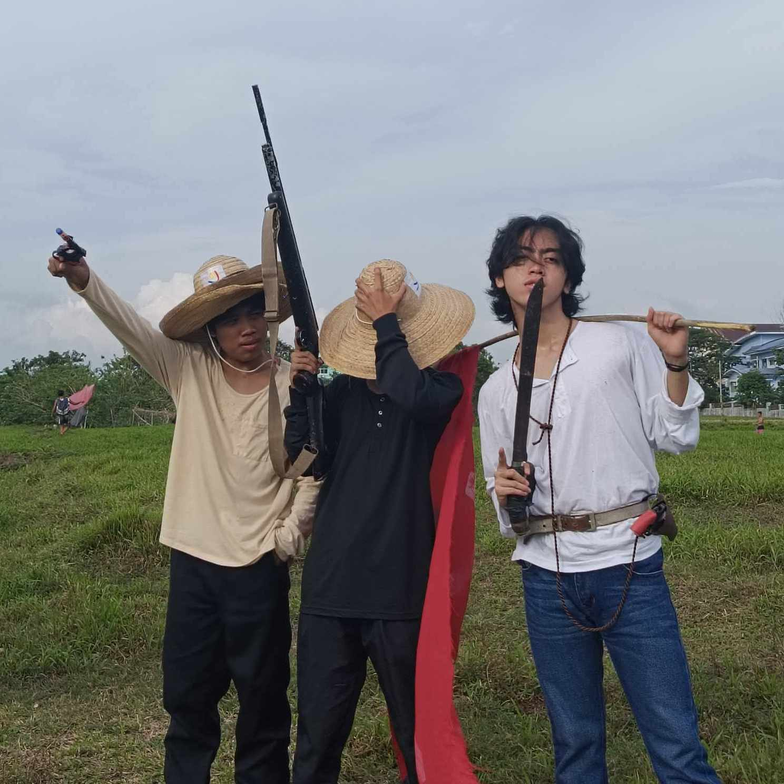
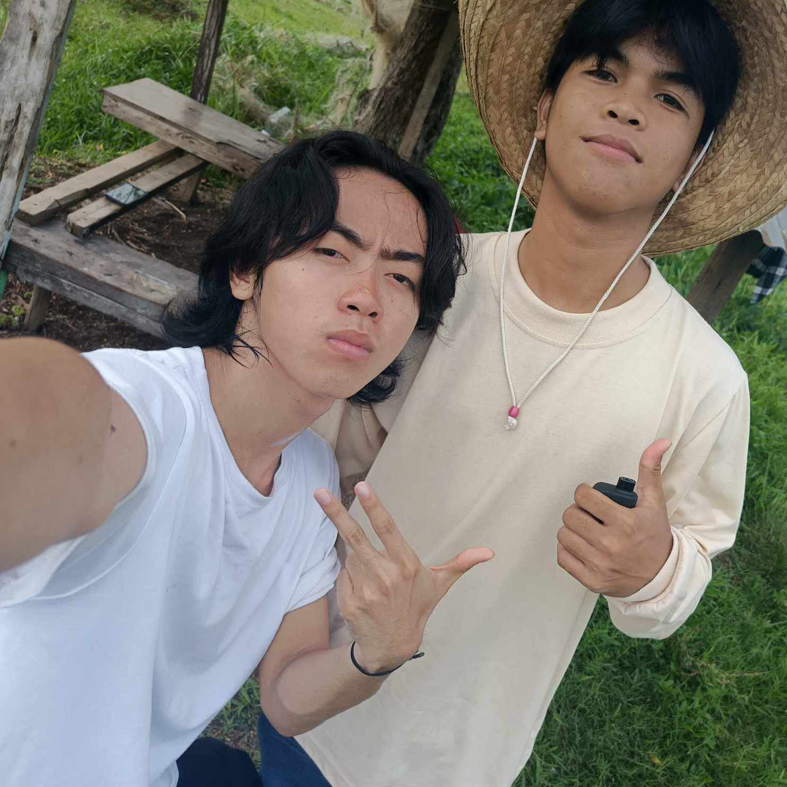
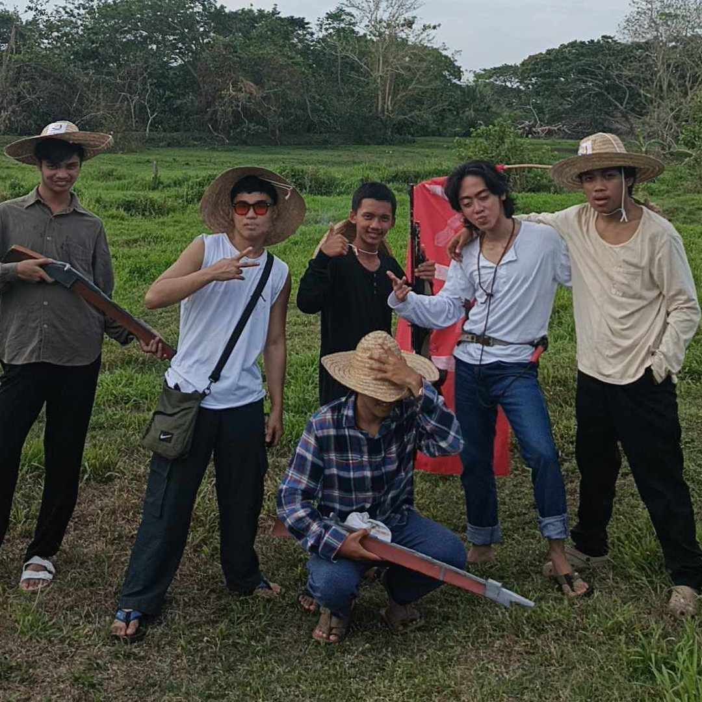
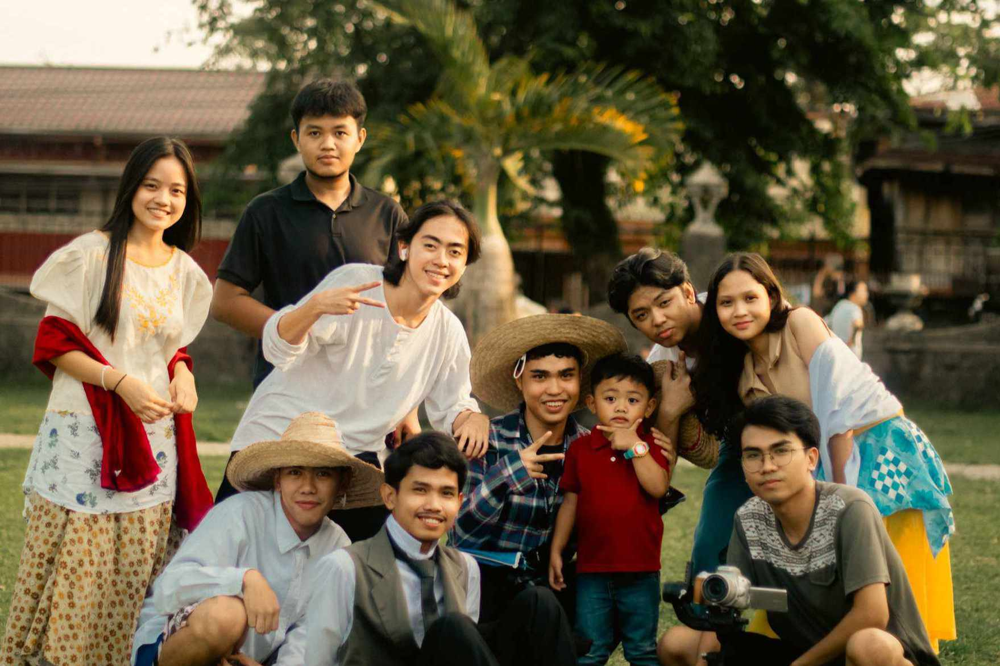

PHOTOS OF KATIPUNEROS

Old Pals
Andres has a trusty Buddies who fought along side with him till the end, this two known as Captain Sancho Valenzuela of Santa Mesa, And his Hommie Emilio Jacinto, PS dun sa tropa nilang wala na malaki ang...

Picture Muna Bago Mamatay
Before Andres get killed him and his brother Procopio Bonifacio they take a picture sa isang maliit na kubo sa dalampasigan.

Picture Muna Bago Sumabak sa Gera
This is the Last Photos of Katipuneros before silang mahirapan sa pag shoshooting jusko po yanong tagal ng shoot na iyan inabot na sila ng gabi pag shoshoot, Mag damag ng naka make-up si Tandang Sura natapos na ata non yung candy crush nya kakaintay kay Andres at Jacinto.

The Real Cast
A big Shout out to everyone who helped make the movie a success. I can never adequately convey how much I appreciate the difference your passion, hard work, and devotion made. I am incredibly thankful to everyone who helped make this amazing adventure possible, from the cast and crew to the fans and supporters. It has been a delightful and genuinely unforgettable experience, and I will always treasure the memories we have made together. With all of my heart, thank you!